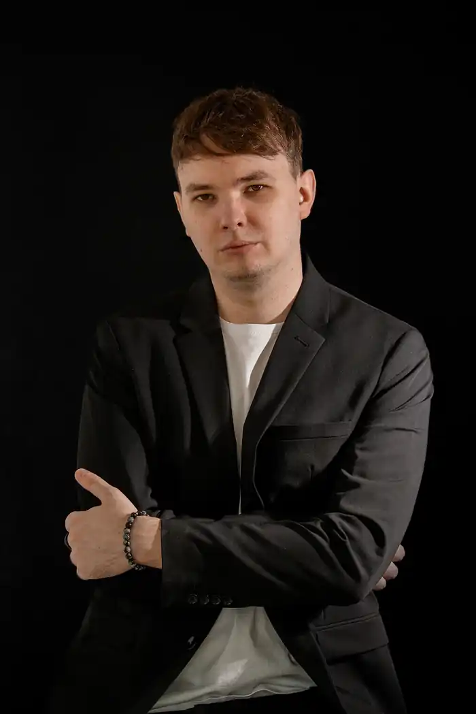
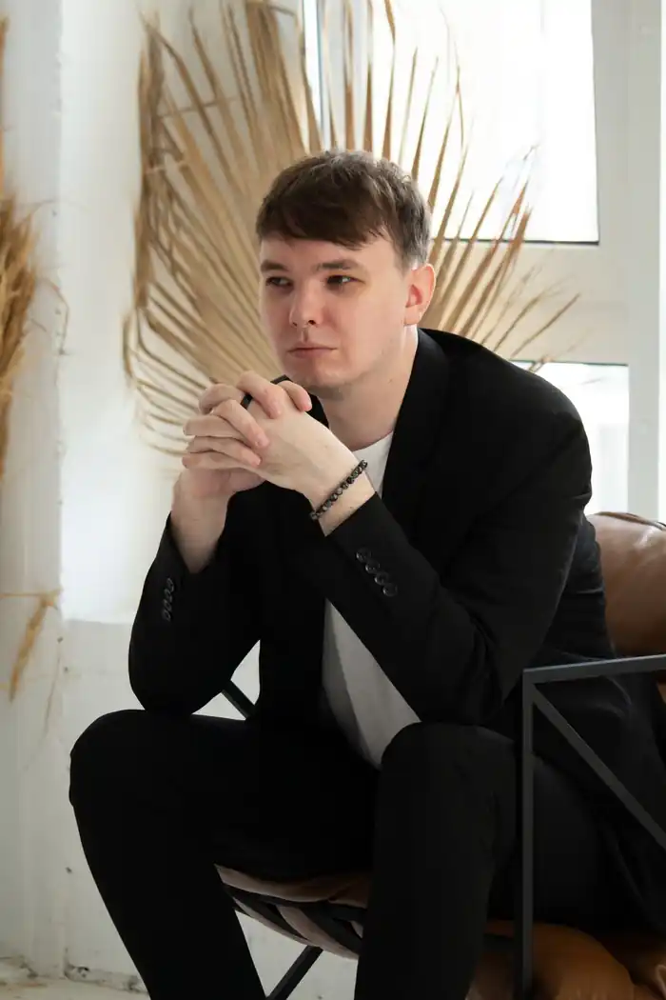

Кирило Тесленко — сучасний український письменник.
Народився 27 жовтня 1994 року в м. Харків. Письменництвом почав захоплюватися з дев'яти років, написавши кілька оповідань і вони збереглися до сьогодні. Це короткі прозові оповідання різних жанрів, які частково увійшли до збірки. У 2018 році закінчив Національний технічний університет "Харківський політехнічний інститут" за спеціальністю "Менеджмент" з ухилом на міжнародні відносини. З 2018 року проживає у місті Київ. Одружений. Наразі працює у сфері продажів. Друкувався у колективних збірках такі як: у видавництві "Лілія", "Pantheon. Найкращі", "Літаренка", "Foxlit", "Zeitglas", "Mooreculture", "Олександрівський маяк", "LUMINOUS.", "Записані Сни", INDIGO. У 2024 році був один з учасників колективної збірки-печворк, яка зафіксувала два Національні Рекорди України. У лютому 2025 році вийшов дебютний роман про змагання на виживання під назвою "Острів" жанру трилер+екшн та збірка різножанрових оповідань "Ті сам історії...". Бібліографія